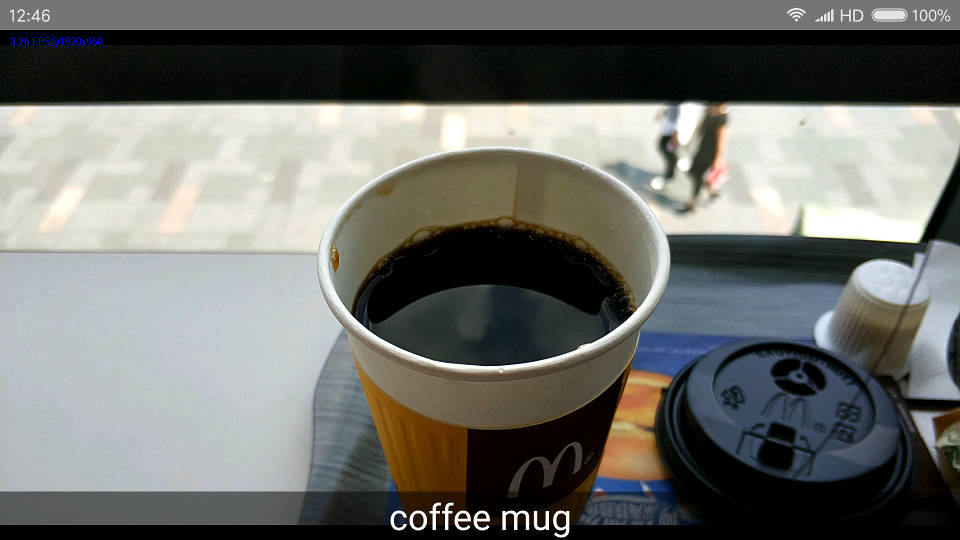
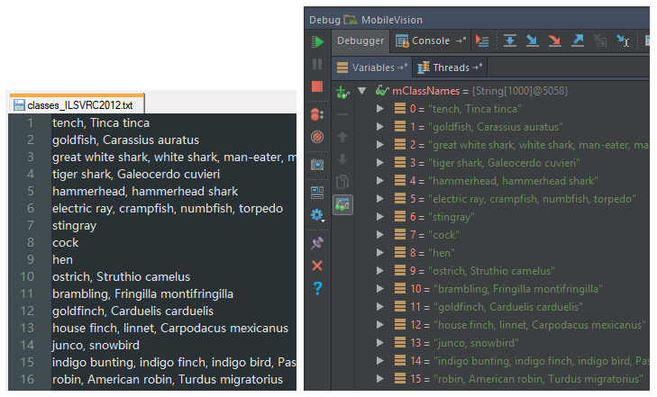

这篇博文也是介绍 OpenCV DNN 模块在 Android 上的应用，运行 GoogLeNet 模型对摄像头画面做图像分类。相关的博文点击文章左下方的 OpenCV 标签可以看到。下图底部有一行字 coffee mug（咖啡杯），这是对画面中的这杯咖啡准确识别分类的结果。

图像分类
本文不涉及深度学习和神经网络的理论，相关的参考资料会在文章末尾处列出。文中的所有代码仅供参考
下载 GoogLeNet 模型文件：bvlc_googlenet.prototxt，bvlc_googlenet.caffemodel，classes_ILSVRC2012.txt。创建 Android App 引入 OpenCV AAR，模型文件（51M）可以放到 assets 里打包进 APK。参考 OpenCV DNN 使用 GoogLeNet 图像分类，把 C++ 代码翻译成 Java。
读取类别名称文件，处理字符串。把 classes_ILSVRC2012.txt（UTF-8 编码）文件的数据分行截断，生成 String 数组。
private String[] readClasses(String file) {
AssetManager assetManager = getAssets();
try {
// Read data from assets.
BufferedInputStream inputStream = new BufferedInputStream(assetManager.open(file));
byte[] data = new byte[inputStream.available()];
inputStream.read(data);
inputStream.close();
String synset = new String(data, "utf-8");
return synset.split("\n");
} catch (Exception e) {
Log.e("knight", "read classes error");
}
return null;
}

read classes
摄像头画面帧的处理，摄像头画面帧不在 UI 线程程里，显示结果部分设置 TextView 要放到 UI 线程。
@Override
public Mat onCameraFrame(CameraBridgeViewBase.CvCameraViewFrame inputFrame) {
// Get a new frame
Mat frame = inputFrame.rgba();
Imgproc.cvtColor(frame, frame, Imgproc.COLOR_RGBA2RGB);
// GoogLeNet accepts only 224x224 BGR-images
Mat inputBlob = Dnn.blobFromImage(frame, 1.0f,
new Size(224, 224),
new Scalar(104, 117, 123), true, false);
mNetwork.setInput(inputBlob, "data"); //set the network input
Mat prob = mNetwork.forward("prob"); //compute output
Mat probMat = prob.reshape(1, 1); //reshape the blob to 1x1000 matrix
Core.MinMaxLocResult result = Core.minMaxLoc(probMat);
// display result
final String objects = mClassNames[(int) result.maxLoc.x];
runOnUiThread(new Runnable() {
@Override
public void run() {
vText.setText(objects);
}
});
return frame;
}
下面是个演示视频，摄像头移到咖啡附件即已经认出这是一杯咖啡。帧率较低和 MobileNetSSD 差不多。
参考资料
GoogLeNet https://arxiv.org/abs/1409.4842
Caffe https://caffe.berkeleyvision.org/
OpenCV DNN https://github.com/opencv/opencv/tree/master/samples/dnn